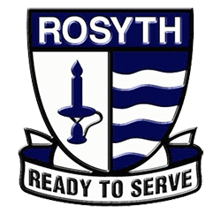
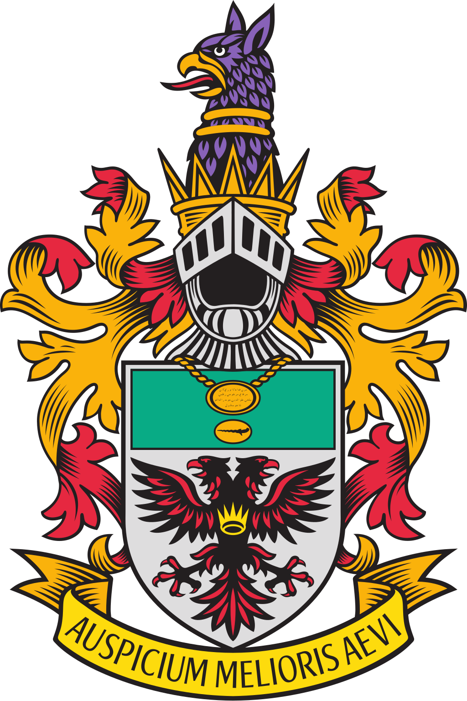
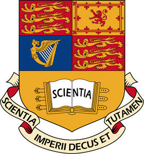
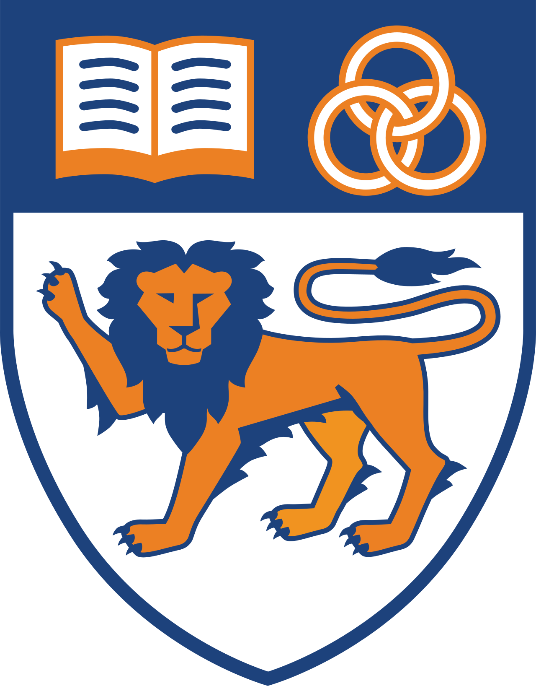
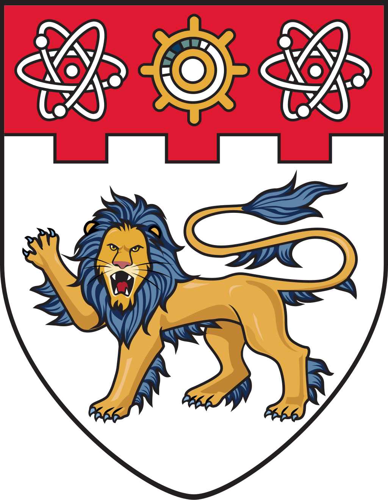
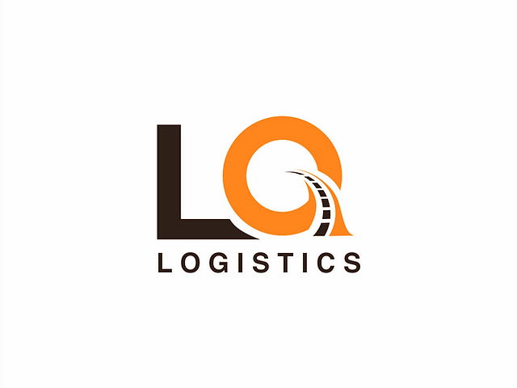
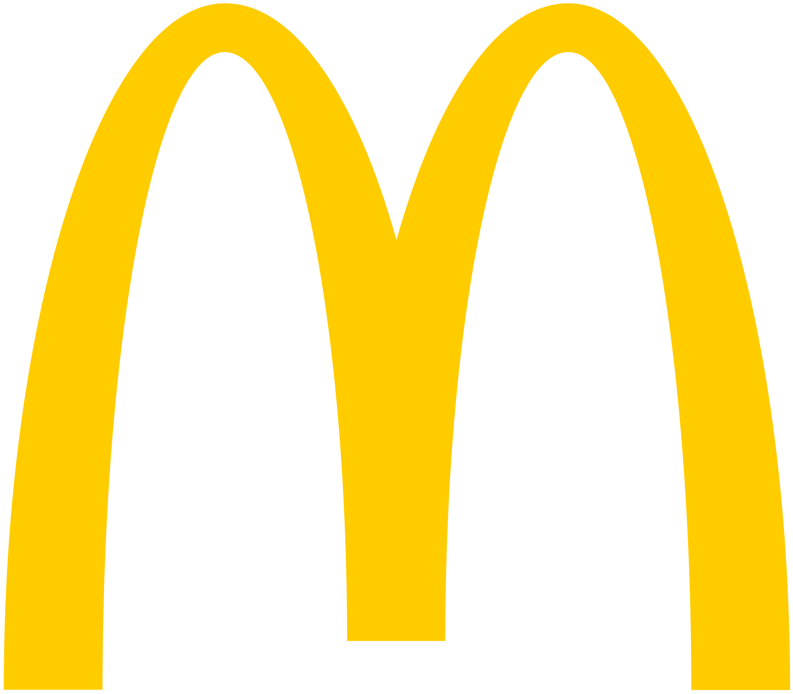
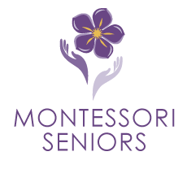
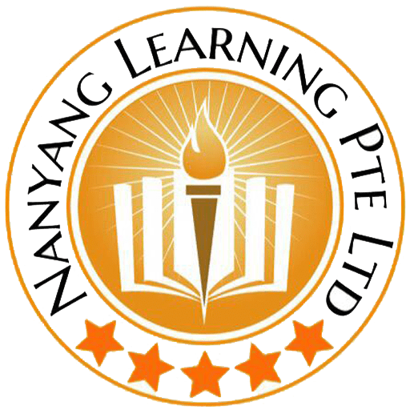
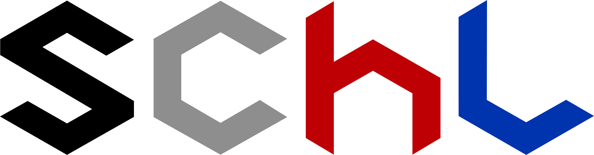

2013 - 2016
Graduated with a PSLE Certificate.

2017 - 2022
GCE A Level Diploma
Graduated with 90 RP (AAAA/A) and Distinction in H3 Chemistry.

2023 - present
Enrolled under the 5-Year Chemistry MSc With a Year in Industry course.

01/2019 - 09/2019 · 9 months
I worked on a research project focussed on developing a scalable, classroom-based virtual reality system for e-learning, which culminated in a poster presentation at the Youth Science Conference (YSC).

07/2024 - 08/2024 · 2 months
Conducted research in synthesis of N-hetercyclic carbenes to contribute to investigations in chiral bisguanidinium - Au complexes.

11/2020 - 11/2020 · 1 month
Warehouse Employee
Placed in charge of overseeing part time employees in retrieving, sorting and packaging products for warehouse & logistics company. Involved operation of manual forklifts.

12/2020 - 12/2020 · 1 month
Part-time employee
Took orders, prepared and served food to customers. Attended to customer needs and inquiries. Maintained restaurant hygiene. Liaised with other branches for equipment and logistics.

02/2023 - 03/2023 · 2 months
Activity Coordinator for Dementia Care
Conceptualized, prepared and executed interactive activities with elderly dementia patients such as sing-alongs, drawing activities and simple exercises.

03/2023 - 09/2023 · 7 months
Provided personalized 1-on-1 tutoring in A-Level Chemistry and Biology, as well as O-Level History, Mathematics, and Art. Successfully enhanced students' understanding and performance, resulting in a significant grade improvement from E to A in preliminary examinations.
03/2023 - 09/2023 · 7 months
Art Teacher
Prepared lesson materials such as slides, course structure and marking rubrics. Conducted art lessons for Secondary School Year 1 and 2 students in classes of approximately 25. Co-organized a field trip to National Gallery Singapore for students under Raffles Institution’s special art programme.

01/2023 - present · 2 years
Organising Committee & Lead Designer
Founded a nationwide chemistry competition, with endorsement by Singapore National Institute of Chemistry (SNIC). Member of the Organising Committee and additionally responsible for problem-setting, vetting and graphics & design.
High Distinction is awarded to a student in the top 5% of their year and region.
One of two Gold Medallists in this annual international drawing competition, organised by TCZ studios.
Achieved an exceptional record as a member of my school's softball competition team, despite the challenges posed by my hearing disability.
Represented my high school in the leading national chemistry olympiad in Singapore.
As a Year 1 undergraduate, I was one of 10 finalists in the UK's leading retrosynthesis competition, designed for early-career chemists, including PhD students and postdoctoral researchers from both academia and industry.
Awarded to the top 10% of the cohort for AY 2023/2024.